Bootstrapd 001 - Edinburgh 2012
The first Bootstrapd gathering was held in Edinburgh on Wednesday June 27th 2012. It was run as an open-space, facilitated by Matt Wynne. It was a non-profit event, with the surplus revenue going behind the bar after the conference.
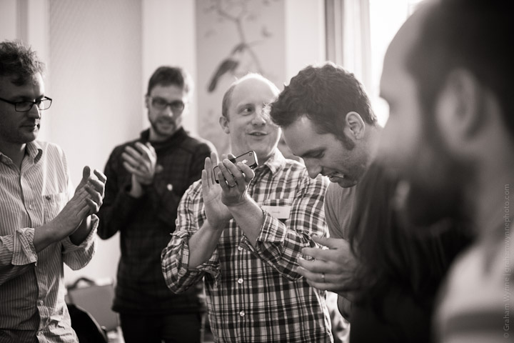
Who came?
- Chris Parsons
- Richard Livsey
- Colin Gemmell
- Despo Pentara
- Stuart Gale
- Graham Ashton
- Ian White
- Jon Hardcastle
- Paul Wilson
- Jarkko Laine
- Drew McLellan
- Peter Cooper
- Tim Craft
- Ben Hughes
- Alan Gardner
- Martin Dell
- Chris Dell
- Chris McGrath
- Klaas Wierenga
- Jon Rowe
- Graeme Mathieson
- Josh Chisholm
- Daniel Lucraft
- John Daniels
- George Palmer
- Andy Goundry
- Sean Blezard
- Gordon Guthrie
- Steve Tooke
- Matt Wynne
- Spencer Turner
- Graham Wynne
- Tracey Rosenberg
- Joe O'Brien
- Jeremy Walker
- Ryan Briones
- Alastair Buick
Where was it?

Abden House, Pollock Halls Campus, Edinburgh, UK
View on a map
Who organised it?


Bootstrapd Edinburgh 2012 was organised by @mattwynne and @tooky
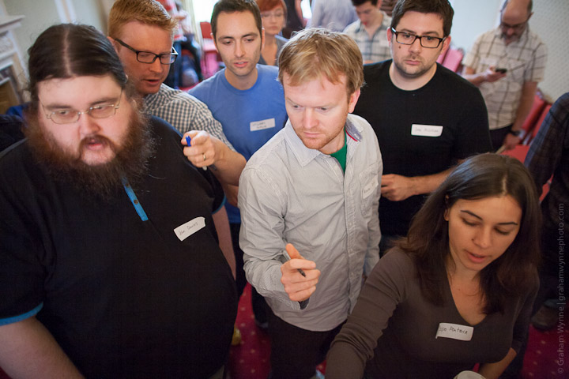
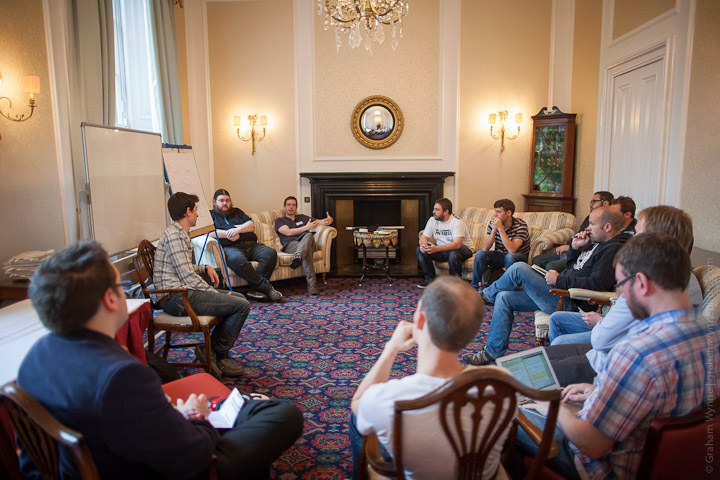
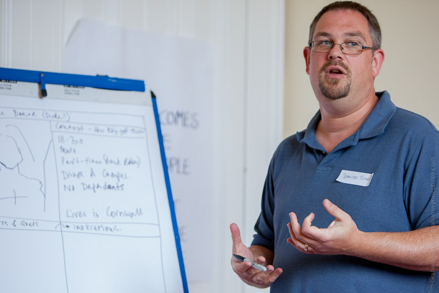
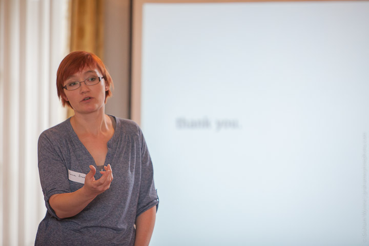
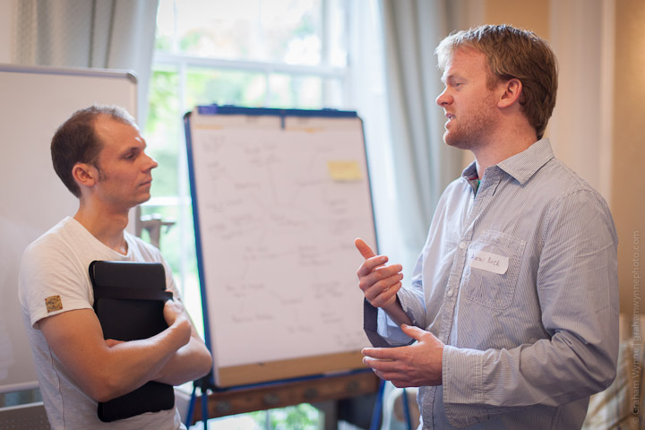
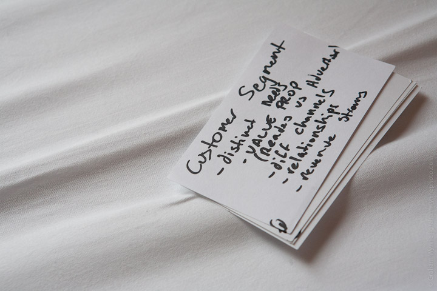
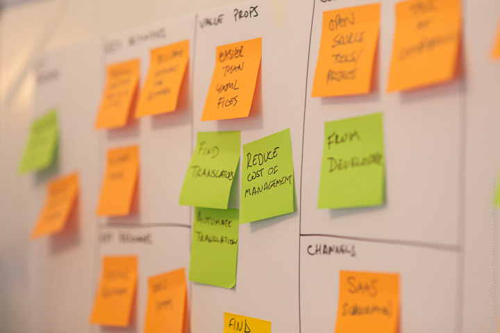
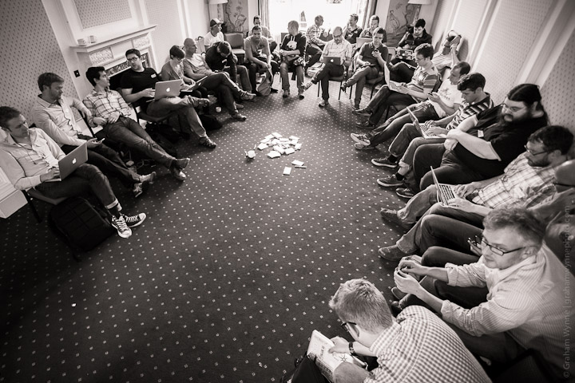
 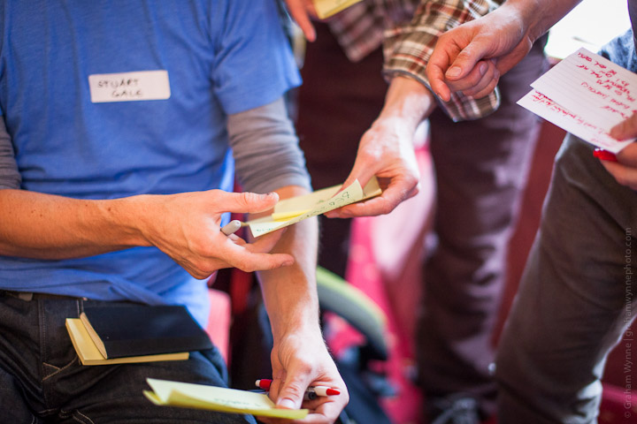
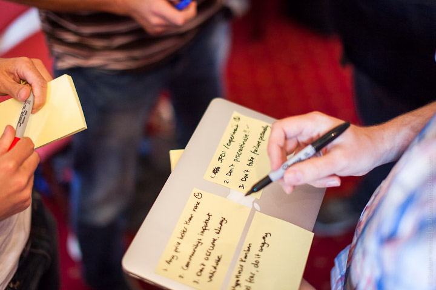
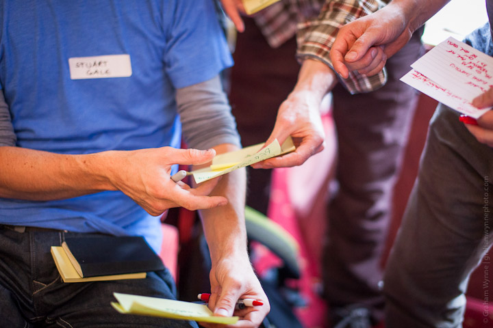
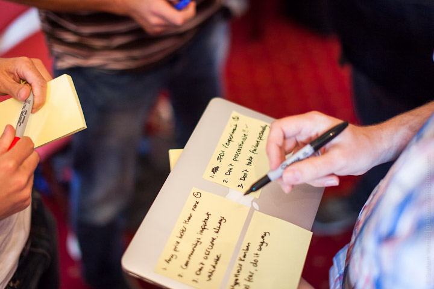